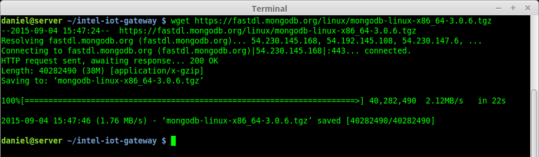

Edge Device Management
Part 1: Set up a MQTT and MongoDB Server
Login to your Intel® Iot Gateway
The commands in this section will be run on the Intel® Iot Gateway so SSH into your Intel® Iot Gateway.
If you need a reminder, look at Step 1: Login to your Intel® Iot Gateway from the Intel® Commercial IoT Workshop Intro Module.
Setup Screen Window Manager
Once you log in the Intel® Iot Gateway, start the screen window manager.
$ screen
You can open multiple console windows, name them and switch between them using screen. There will be many times when you will want to run several processes at the same time and screen will be very useful to launch them in separate windows. The another alternative is to simply SSH into the server multiple times. Of course, in production you will want to launch most processes at boot time using Systemd.
To create a new console type Ctrl-A C
To name the console type Ctrl-A Shift-A
To get a list of all consoles type Ctrl-A "
To get a
Set up the Mosquitto MQTT Broker
-
Create a user for your Mosquitto.
$ adduser mosquitto -
Launch the MQTT Broker named mosquitto
$ mosquitto
Set up MongoDB on the Intel® Iot Gateway
-
Download the MongoDB software.
$ wget https://fastdl.mongodb.org/linux/mongodb-linux-x86_64-3.0.6.tgz
-
Once downloaded, unarchive the downloaded file.
$ tar zxvf mongodb-linux-x86_64-3.0.6.tgz
-
Add the mongodb binaries to the /usr/bin directory
$ cp ./mongodb-linux-x86_64-3.0.6/bin/* /usr/bin/ -
The Intel Iot Gateway is enabled with grsecurity which by default prevents the execution of processes that are not added to a white list.
Add the MongoDM daemon (
mongod) to the whitelist type:$ paxctl -Cm /usr/bin/mongod -
The directory /data/db is the default directory that MongoDB stores its data. Let's make sure that it has plenty of space. Be sure that the /dev/sda3 partition is mounted to /data/db.
$ umount /dev/sda3$ mkdir -p /data/db$ mount /dev/sda3 /data/db -
Start the MongoDM daemon using the
mongodcommand:$ mongod